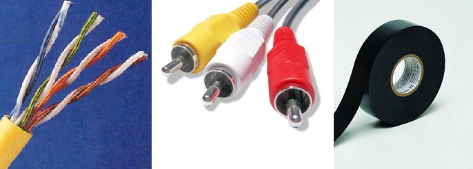
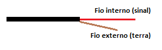
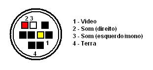

Como fazer um cabo A/V para o Mega Drive 3
 :::. Por Gigacom - Tá cansado de
confundir aqueles inimigos em Sonic 1 com as
interferências na tela da TV? Enjoôu do som véi
chiado toda vez que tenta zerar Moonwalker?
Tá de saco cheio de ficar enroscando e tirando a antena da TV
sempre que vai ligar o Mega Drive!? Pois seus problemas acabaram!
Faça hoje mesmo um cabo A/V para o seu Mega Drive, e diga adeus
para as imagens ruins!
:::. Por Gigacom - Tá cansado de
confundir aqueles inimigos em Sonic 1 com as
interferências na tela da TV? Enjoôu do som véi
chiado toda vez que tenta zerar Moonwalker?
Tá de saco cheio de ficar enroscando e tirando a antena da TV
sempre que vai ligar o Mega Drive!? Pois seus problemas acabaram!
Faça hoje mesmo um cabo A/V para o seu Mega Drive, e diga adeus
para as imagens ruins!
Para fazer um cabo A/V simples para o seu Mega Drive (qualquer modelo), você basicamente precisará do seguinte:
1 - Fita isolante.
2 - Um cabo A/V comum, desses utilizados em DVDs .
3 - Alguns fios rigidos,
você pode obtê-los cortando um pedaço de cabo
de rede de computador, que são ideais para esse trabalho.

Com o material em mãos, siga a receita abaixo:
1 - Corte os três conectores de uma das pontas do cabo de DVD, e desencape cada fio separando os fios internos. Tome o cuidado para não deixar que esses fios internos entrem em contato um com o outro.
2 - Pegue o cabo de rede, e abra-o. Retire os fios de dentro, pegue quatro fios e corte-os em pedaços de pelo menos 3 centimetros. Desemcape as pontas de cada fio, deixando no máximo 1cm desencapado de um lado, e 5mm do outro.
3 - Pegue as pontas do cabo de video (amarelo) desemcapado do cabo de DVD, e una-o à parte desencapada maior (1cm) de dois fios de rede, sendo que um dos fios de rede deverá ficar unido com o fio de sinal do cabo, e o outro com o terra. O fio de sinal é o que está encapado dentro do cabo, e o terra é o que está desencapado.

4 - Isole as conexões desses fios do cabo de video com fita isolante. Em seguida, conecte as pontas do cabo na saída de audio/video do Mega Drive, nos seus respectivos pontos:

O fio do sinal de video deverá ficar no ponto de nº 1 (no quadrado em amarelo) e o fio do terra do video no ponto de nº 4, que é aquele anel metalico que rodeia o conector. O conector do MD3, ao contrário do MD 1/2, possui saida para som estereo. Só conectar o fio do sinal de audio do cabo nos pontos 2 e 3, lembrando que o ponto 2 é para o cabo de ponta vermelha e o ponto 3 é para o cabo de ponta branca.
Moleza não é mesmo? Esse é um procedimento bem simples e que funciona muito bem. Você pode com o tempo querer melhorar essa gambiarra, eu mesmo fiz um molde com durepox para simular o conector, daí fica mais facil tirar e colocar o cabo sempre que preciso.
E como vocês já sabem, duvidas, sugestões, declarações de
amor, só falar no Trombone
Acesse o Trombone e comente sobre essa matéria!


O Master System 3 foi mais fatiado que carne de segunda antes de ser moída... tiraram o suporte ao óculos 3D, colocaram uma travinha meio vagabunda para servir de liga/desliga, sumiram com o botão reset e com as saídas A/V... ...